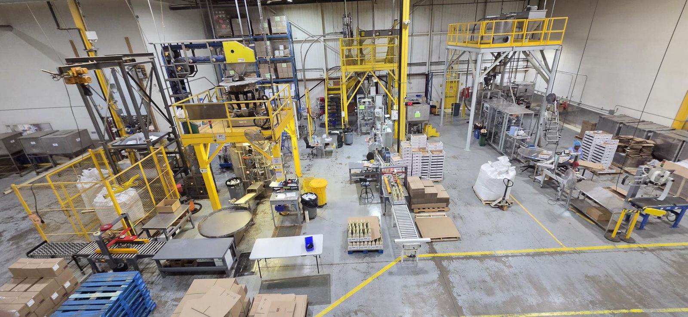
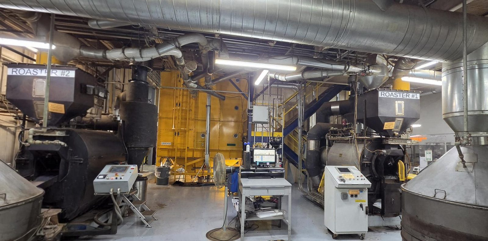
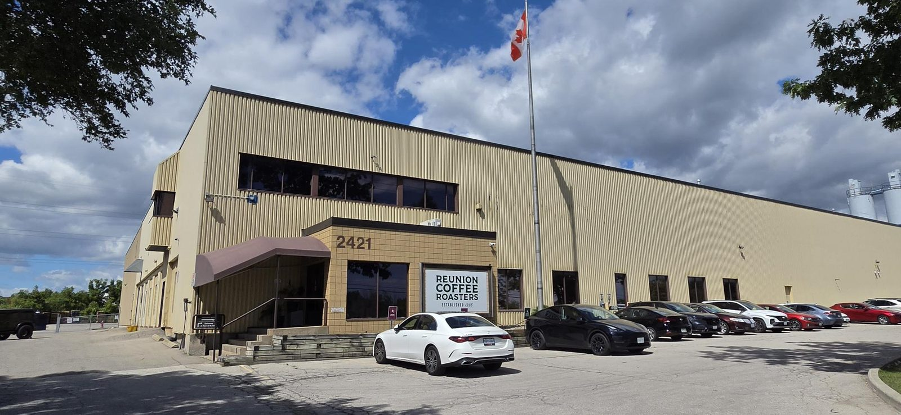
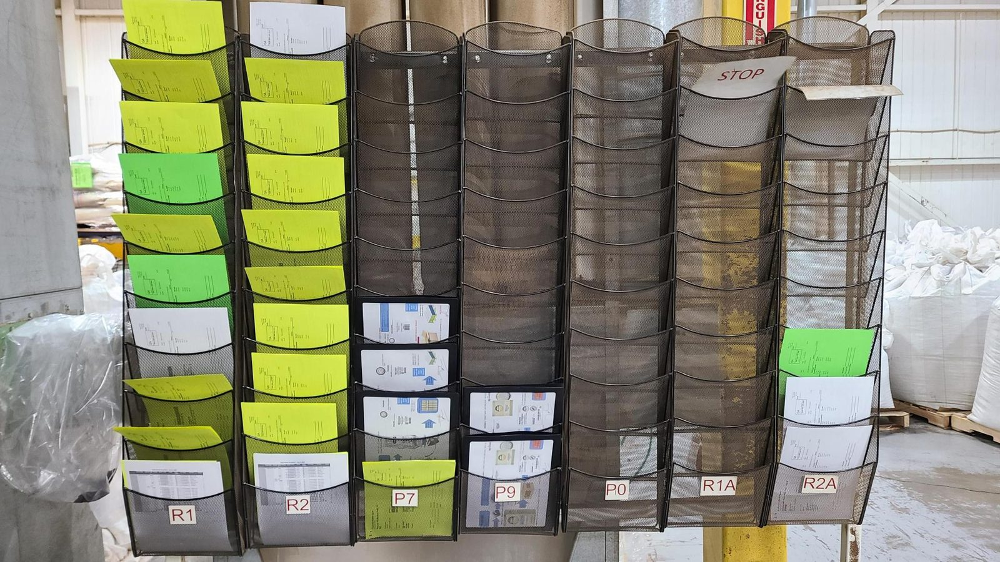
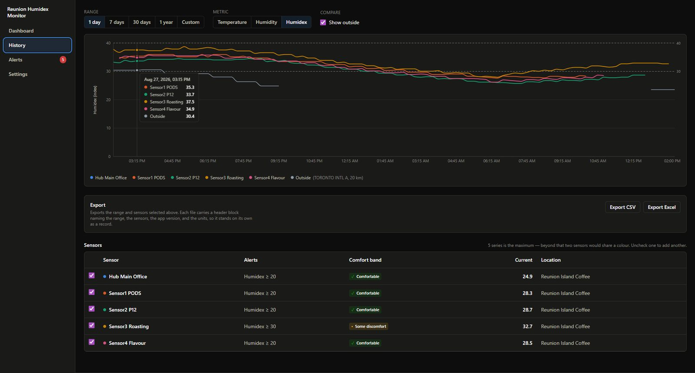

Four months taking a coffee roastery off paper
I spent the summer at Reunion Coffee Roasters figuring out how information actually moves through a production plant — then building software to replace the clipboards it was moving on. This is what I set out to learn, what I built, and the part I got wrong early.
- Employer
- Reunion Coffee Roasters
- Role
- Production Data & Automation Specialist
- Term
- May–August 2026 · 4 months
- Location
- Oakville, Ontario
Introduction
From May to August 2026 I worked at Reunion Coffee Roasters in Oakville as a Production Data and Automation Specialist. It was my first co-op term, between second and third year of the Bachelor of Computing program at the University of Guelph.
The job started as a question rather than a project. Reunion runs a modern roasting facility — Microsoft Dynamics AX as the ERP, PLCs and HMIs on the equipment, Excel everywhere in between — but a significant amount of what happens on the floor is still recorded on paper. Someone writes a number on a sheet, the sheet travels, and eventually a person types it into a computer. My first task was to find out where all of that paper was, what was written on it, and where it went.
The second half of the term was spent building software to replace some of it. What I mainly took away, though, wasn't about the software.
The Employer
Reunion Coffee Roasters is a family-owned specialty coffee roaster based in Oakville, Ontario. The Pesce family has been in Canada's specialty coffee market for more than forty years, and the company roasts and supplies coffee to customers across Canada and internationally — including Organic, Fair Trade, Direct Trade and Rainforest Alliance certified varieties.
A few things about the place stood out to me. It has been a Certified B Corporation since 2013, which means it gets independently assessed on environmental and social performance and has to re-certify regularly — its most recent score was 100.7, against a qualifying threshold of 80. The roasting facility is one of the largest renewable-energy-powered roasting operations in Canada. And in 2015 Roast Magazine named Reunion its Macro Roaster of the Year.
Where computing fits
Coffee roasting isn't an industry people associate with software, which is exactly what made it interesting to work in. The plant already runs on a real technology stack: Microsoft Dynamics AX holds inventory and production orders, PLCs control the roasters and packaging equipment, and HMIs give operators a way to interact with those machines. Excel sits between all of it, doing far more work than a spreadsheet should reasonably be asked to do.
The gap is between the machines and the records. Equipment produces data. The ERP consumes data. But a lot of what happens in between — counts, checks, batch details, quality observations — gets written down by hand first and entered later. Every one of those handoffs is a delay, and a chance for the number to change on the way. Closing that gap is the computing problem at a company like this one, and it's the reason my role existed.



Goals & Learning Outcomes
Coming in, I set goals around three of the learning outcomes from my program: technical literacy, problem solving, and inquiry and analysis. I picked those because the role was described to me as open-ended, and I wanted goals that would still make sense whatever the work turned out to be. That guess turned out to be right — the job changed shape twice over four months.
The one technology I specifically wanted to get my hands on was PLCs. They run the machines, and my thinking going in was that if I wanted to make a real difference to how production worked, the machine level was where it would happen. I never got near one. The gaps my process maps surfaced were information problems rather than control problems, so that's where the work went — the right call for the plant, and still the skill I'd most like to pick up next.
-
Met
Technical literacy
I went from having written mostly coursework and small personal projects to shipping three desktop applications that people at work actually use. Across them I picked up TypeScript, Electron and React on one side and Python, Flask and Tkinter on the other; worked with SQLite, third-party APIs, and instruments talking over USB serial; and learned to package software so a non-technical person can install and run it. That last part was the one I'd never had to think about before, and it turned out to be a real portion of the work.
-
Partly
Problem solving
The gap is QA Logger. What I built works — it handles three of the lab's instruments end to end — but the lab runs a good deal more than three, some of it old enough that it doesn't output anything a program can read. So the tool covers a slice of the work and the spreadsheet is still there for the rest. That's the thing I'd do differently: I scoped the build and not the lab, and working software isn't the same as a solved problem. From the QA team's side the problem is still mostly open.
Two of the three applications are in use. QA Logger isn't, and that's the honest limit of what I managed. The lab runs a lot of older instrumentation and tests a far wider range of properties than I understood when I scoped it, and four months wasn't enough to cover that surface. Solving a problem properly includes sizing it first, and I sized this one wrong — I'd rather have narrowed it to one instrument and finished than built most of something.
-
Met
Inquiry & analysis
Mapping the plant's information flows was this goal in its purest form: I couldn't design anything until I understood how a number got from the floor to the system, and the only way to learn that was to ask people and watch them work. I was also wrong about a lot of it at first, which I've written about below.
The Work
The term split cleanly into two halves.
First: mapping how information moves
For the first few weeks my job was to walk the plant and document everything. Not the machines — the information. Where does a number get created, who writes it down, what happens to the paper, who reads it next, and where does it finally land? I turned that into process maps showing each flow end to end, and used them to identify where paper was creating delay, duplicate entry, or room for error.
This was slower than I expected, and not because the processes were complicated. It was because the version of a process people describe and the version they perform are rarely the same, and you only find the difference by watching.
The finished pack ran to nineteen diagrams — plant layout and material flow, information-flow swimlanes for each production area, the batch ticket's full lifecycle, and a set of future-state maps showing where the process could go. It's an internal document, so what follows is a simplified version of one of them.
The shape that kept turning up looked like this — a batch ticket that travels with the coffee, collecting handwritten information at every stage, until someone in the office types the whole thing into the ERP at the end:
Product, quantity, roast target — printed on paper.
Weights, temperatures and roast data written on the ticket by hand.
Readings taken off lab instruments and copied across.
Counts, weights and line checks added to the ticket.
The finished ticket is keyed in by hand, after the fact.

Then: building things
Once the maps existed, the gaps in them turned into a backlog. The second half of the term was spent building applications against that list.
Humidex Monitor
A desktop application that tracks heat stress in the plant. Ontario's guidance on working in heat is expressed in humidex terms, and checking it manually meant someone reading a sensor and doing a conversion. The app polls our AlertAQ temperature and humidity sensors, calculates humidex using Environment Canada's formula, pulls outdoor conditions from Environment Canada for comparison, and raises an alert when a threshold is crossed. It shows a live dashboard, keeps history, logs alerts, and exports to CSV or Excel.
It's built with Electron, React and TypeScript, stores everything in a local SQLite database, and runs entirely on the user's PC with no server component. Two decisions I'd defend: credentials are held in OS-level encrypted storage rather than anywhere the UI can reach them, and humidex is calculated when a reading is displayed rather than stored — so if the formula ever needs correcting, the historical data corrects itself.

QA Logger
The quality lab runs samples through several instruments — a barcode scanner, an Sinar BeanPro for moisture and density, a Dansensor CheckMate 3 for gas analysis — and every reading was being copied into a spreadsheet by hand. QA Logger listens to those instruments directly over USB serial, parses what they send, and writes the results into the workbook and a CSV audit trail as the readings happen. Scanning a barcode sets the active sample, and subsequent readings land on that sample's row. It does that reliably for the three instruments above, which is also its limit — the lab runs plenty more, so it hasn't replaced the spreadsheet yet. I've written about that under Goals.
It's Python with a Tkinter interface, and it's the most concurrent thing I've written: a UI thread, a backend worker that owns the Excel session, a port monitor that notices devices being plugged in and unplugged, and one listener thread per active instrument — all communicating through queues rather than shared state.
The problem I didn't anticipate was baud rates. Serial devices need to be read at the right speed, and if you guess wrong you get garbage instead of an error. My first approach cycled through candidate rates on a timer, which quietly broke the BeanPro — it prints once per sample, so a reprobe at the wrong moment meant the reading was simply gone. I changed it to rotate on evidence rather than on a clock: keep the current rate until the bytes coming back are unreadable, and once legible text arrives, commit to it. Devices that speak rarely stopped being punished for it.
Packaging Inventory Logger
Packaging inventory counts were done on paper and then typed into a spreadsheet. This replaces the paper: staff open the app on a phone or tablet, search for an item, and record a count. When the count is finished, an administrator exports everything back into the original workbook. It runs as a Windows desktop app that also serves a web interface over the local Wi-Fi, so anyone on the floor can join by scanning a QR code — no install on their device, no browser setup, no account.
Python and Flask behind a WebView2 window, SQLite for storage,
packaged with PyInstaller and Inno Setup so it installs like
normal software. The export writes totals into the workbook's
existing counted column and leaves the formulas
alone, which mattered more than it sounds — the people using
the result wanted their spreadsheet back, not a new one.
The hard part
Getting several people counting at once was the problem that made me think hardest. The obvious approach was to let everyone write into a shared Excel workbook, because that's what the process already used and what everyone already knew. Excel is not built for that, and the failure modes are the bad kind: locked files, lost entries, one person's save quietly overwriting another's numbers. Nobody would even know a count had gone missing.
What made it tricky is that the constraint wasn't really technical. I could have built something with accounts and a proper server, but it had to work for someone standing in front of a pallet holding a phone, mid-shift, without training.
Two decisions did most of the work. First, one machine owns the data: the app runs on a host PC and serves a web interface over the local Wi-Fi, so the phones and tablets are thin clients rather than copies. Joining is scanning a QR code.
Second, and more important — counting appends rather than overwrites. Each count is stored as its own timestamped entry, and an item's total is computed as the sum of its entries. There is no running total anywhere to be clobbered, so two people counting the same item at the same time simply produce two entries. It also meant a pallet could be counted in several passes without anyone doing arithmetic in their head, which turned out to be how people actually wanted to work.
The spreadsheet stopped being where the counting happened. It became the format the answer comes out in — a much easier requirement to satisfy.
I noticed afterwards that I'd made the same call twice without planning to. Humidex Monitor computes humidex when a reading is displayed rather than storing it; the inventory app computes totals by summing entries rather than keeping a total. Both times, storing the derived value would have been easier to write and worse to live with — a cached number is a number that can be wrong, and neither of these had to be.
Skills I brought versus skills I picked up
Coursework gave me the fundamentals I leaned on constantly: how to structure a program, how to think about data, enough database knowledge to design a schema that wouldn't embarrass me later. Those transferred directly.
Almost everything else I learned on the job. The specific stacks — TypeScript with Electron and React, Python with Flask and Tkinter, SQLite underneath both — I picked up as I went. But the bigger gaps weren't technical. Nobody had taught me how to work out what to build when the person asking can't specify it, how to ask a question on a production floor without interrupting someone's work, or how to hand software to a person who didn't ask for it and won't read documentation. In class, the requirements come with the assignment. Here, finding the requirements was the assignment.
What I Took Away
I showed up in May thinking the hard part of this job would be the building. It wasn't. The hard part was understanding a process well enough to be sure I was building the right thing.
My first process maps were wrong. Not badly wrong — the shape was right — but I'd filled in the gaps with assumptions about how production must work, based on how I'd have designed it. The real process had exceptions I hadn't imagined, steps that existed for reasons nobody had written down, and workarounds people had built up over years because the official way didn't survive contact with a busy shift. I didn't discover any of that by looking at a diagram. I discovered it by spending time on the floor and, eventually, learning to ask better questions — less "does it work like this?", which gets you a polite yes, and more "show me what you did last time this went wrong."
That reframed the whole term for me. The paper I was trying to eliminate wasn't there because nobody had gotten around to replacing it. It was there because it worked, and because the people using it had shaped it around problems I couldn't see from a desk. Anything I built had to be better than that — not better in the abstract, better on a Tuesday afternoon in the middle of a run.
The other thing I'd tell myself in May: software you write for people at work isn't finished when it runs. It's finished when someone who didn't ask for it can install it, open it, and understand what it's telling them without you standing there. That's a much later point than I would have guessed.
For my next work term, I want the same thing this one had: a problem that starts vague, and enough access to the people living with it to figure out what it actually is. I'd also like to work somewhere with other developers around — I was effectively working alone on the software side this term, and I think I'd learn faster with people to review my decisions.
Conclusion
Four months at Reunion took me from documenting how paper moves through a coffee plant to shipping software that removes some of it. I met the goals I set around technical literacy, problem solving, and inquiry — though the last one taught me the most, and not in the way I expected.
If someone read this page and had to describe it in a sentence, I'd want them to say: he learned that the interesting part of building software for a business isn't the code, it's understanding the work well enough to know what's worth building — and he learned it by being wrong first.
Acknowledgments
Thank you to Saiyid, who was plant manager when I started and is now VP. He guided the project from the beginning and gave me a lot of advice that had nothing to do with software — how to work with people, how to carry yourself in a plant, when to push and when to listen. I got a mentor out of this term, which isn't something I expected going in.
Thank you to Michael, our supply chain manager, who kept handing me problems that were slightly beyond what I thought I could do. Most of what I built this term traces back to something he pushed me toward.
And thank you to the operators, supervisors and QA staff on the floor. I interrupted a lot of people's work this summer with questions about processes they've been running for years, and not one of them made me feel like a nuisance for asking. Everything I understood about the plant, I understood because someone stopped what they were doing to explain it.